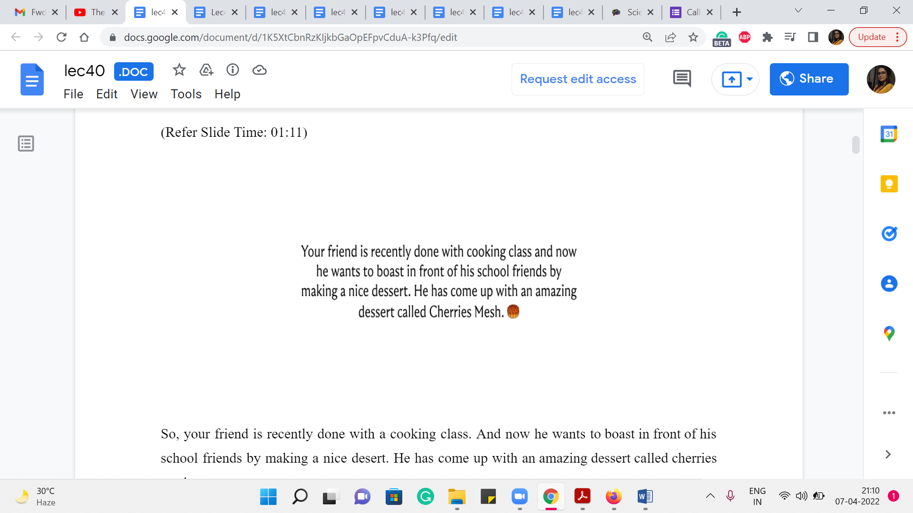

M 2 (Cherries Mesh)
Lecture - 40
Minimum Spanning Trees - Module 2 (Cherries Mesh)
(Refer Slide Time: 00:14)

Welcome back to the second module of the seventh week and Getting Started with Competitive Programming. As you know, we are talking about minimum spanning trees this week. And the first problem I want to discuss is this really short and sweet problem called ‘cherries mesh.’ It is literally sweet in the sense that it is based on a ‘dessert preparation.’ And this problem showed up in Google Kick Start 2019 round E.
And if you read the problem, I think you will see quite quickly that it calls for an MST-based solution. However, if you just rush into building up the graph and running your favorite MST algorithm, you might run into a little bit of trouble with the constraints, especially in the large data set. So, you have to do just a little optimization to make sure that your algorithm runs within the given limits. So, let us get started by looking at the problem statement.
(Refer Slide Time: 01:11)
 
So, your friend is recently done with a cooking class. And now he wants to boast in front of his school friends by making a nice dessert. He has come up with an amazing dessert called cherries mesh.
And to make the dish he has already collected N cherries, which are numbered 1 to N. And he has also decided to connect each distinct unordered pair of cherries with a sweet strand made of sugar. So, you can probably already see where the graph modeling comes in. You could quite naturally, I think, think of the cherries as being vertices. And when you see this business about unordered pair of cherries being connected, you obviously think of undirected edges corresponding to these vertices. So, these strands correspond to edges in your graph.
(Refer Slide Time: 02:05)


What we are told is that the sweet strands are either red or black, depending on the sugar content in them. Each black strand contains one unit of sugar, and each red strand contains two units of sugar. So, this, again, quite naturally corresponds to edge weights.
If you wanted to visualize this, you know, you could look at an example like this. Notice that all the edges are present. This comes from, again, the problem description, where you are told that every pair of cherries is connected by a strand. So, the only information that makes these strands distinctive is whether they are a black-strand or a red-strand, reflecting the amount of sugar content in them. So, this is the setup. Now let us talk about the task.
(Refer Slide Time: 02:51)


It turns out that the desert is too sweet because there are too many edges or too many strands in them. And these days, school friends are dieting, and they usually like dishes with less sugar. So, that is our task now.
You want to find out which strands you should remove so that the dessert still hangs together. Okay. So, you want each pair of cherries to still be connected to each other somehow, either by a direct strand or by a sequence of strands. And you want the remaining strands to add up to having the minimum possible sugar content. Now if you read this, this is what I meant when I said that it is reasonably clear that this calls for an MST application.
Because if you look at these two conditions, they are exactly like the conditions we spoke about in the first module when we were talking about paving a muddy city. Remember, we said the first condition was that you should be able to go from anywhere to anywhere. The second condition was that the cost of the roads that you build has to be as small as possible. So, these conditions have a very similar flavor.
The first condition says that every pair of cherries should be connected directly or indirectly. And the second condition says that you want to minimize the sugar content in the strands that you do decide to keep. So, clearly, what you are looking for, here, is a minimum spanning tree. Although the question in the problem statement is framed as figuring out what you should remove. If you look at the input-output description, you will see that what you are expected to output is the minimum amount of sugar content that will be left behind.
So, you are really looking for the cost of a minimum spanning tree in this graph. Now once you recognize this, at least one solution is quite immediate. We just build up the graph and then run our MST algorithm on it. Now for this problem, how do you build up the graph? What are you given? You are given a list of all the black strands. In other words, you are given the list of all the edges that have weight 1.
And it is implicit that every edge that has not been listed is a weight 2 edge or it is a pair that corresponds to a red strand. To make this more explicit, let us just look at the data in the second sample input, or the second test case in the sample input.
(Refer Slide Time: 05:21)

So, what you are given is that there are three cherries, and there is one black strand connecting the cherries labeled 2 and 3. So, that is all the information that you have from the sample input. So, when you look at the black edge, you read it in and added to your adjacency lists or your edge lists, as usual, remembering to record also that the weight of these edges is just 1. But now you also have to add all the remaining edges.
And one way of doing that would be, for instance, if you were storing things in an adjacency list, then you could go to every vertex and simply loop through the whole list of vertices and check if these vertices are already present in the list. If yes, then you can ignore them. But if they are missing, then you will add them in with a weight of 2 as we just did here. This will generate your complete graph.
But notice that already the complexity of generating this graph is going to be at least n square, which is understandable, because there are n squared edges to be put on the record, given that this is in fact a complete graph that you are working on. In fact, if you just follow the process that I am describing here, using adjacency lists, as I have been suggesting, then you might even need a little more than ‘n’ square time.
Because when you are trying to populate the red edges in the adjacency list of some vertex, you have to go through every other vertex, and check if they are already on your adjacency list or not. So, that bit of searching is going to cost you a little bit extra. Now, there are probably ways that you can optimize this. But an easy way of doing this in order n squared time, given that you are committed to spending that n squared time anyway is to simply use an adjacency matrix instead.
This is a good point actually to pause the video and try and see if you want to implement this solution, it is a good warm-up to what we are going to see next. And if you actually do this, what you will likely experience is that your solution will work well for the first test set, which has smaller test cases.
(Refer Slide Time: 07:38)

But for the second test set, which has the larger tests, you might run into some trouble with these constraints. Notice that the number of vertices can be as large as 105, which means that n square running time will land you in some trouble. Notice also that the number of edges of weight 1 is also guaranteed to be at most 105. So, in some sense, if you look at the subgraph comprised of the black edges – it is sort of a sparse subgraph.
So, one question to consider in terms of improving our approach is if we can come up with an algorithm whose running time really depends on the black edges, rather than building up this whole big, dense structure. So, take a moment here and think about this a little bit. Think about, for instance, what would Kruskal’s algorithm do when it is building out the spanning tree. Does it have some special structure, especially in terms of thinking about the black edges first and then the red edges? Come back once you have had a chance to spend a moment reflecting on the whole situation.
Okay. So, if you think about how Kruskal’s algorithm would work, notice that it will process all the black strands or the edges of weight 1 first before getting to any of the red strands, or the edges of weight 2.
(Refer Slide Time: 09:03)


So, for instance, in this example here, if you were to run Kruskal’s algorithm, you will find that at some point, once you are done processing all the edges of weight 1, you are going to have a spanning forest for the subgraph on the black edges alone. Now the exact structure of the spanning forest on this black subgraph will depend on the nature of the order in which the edges are being processed.
So, different runs of Kruskal’s algorithm if ties are being broken differently, might lead you to different spanning forest structures. But the key thing is that the total cost of the spanning forest is going to be the same, no matter how ties were broken, no matter which particular spanning forest you end up on.
And this cost is simply going to be the sum of the sizes of the components in this black subgraph. Of course, you need to subtract 1 from each of those sizes, to get to the actual cost of the spanning forest that you get at the end of this first phase of Kruskal’s algorithm. So, in this example, for instance, we have two components, which have 3 and 2 vertices respectively. So, the cost of any spanning forest on this sub-graph is going to be 3, which is the size of the first component - 1, 3 - 1, 2. And the size of the second component - 1 should be 2 - 1, 1.
So, 2 + 1 = 3. And here is what a spanning forest for this graph could look like, for instance. Now, what happens in the second phase of Kruskal’s algorithm, when it is starting to process all of the red edges? Well, all that it would have to do is essentially connect the trees that are there in the spanning forest. And again, there is going to be many different ways that you can do this.
But the crucial thing, once again, is that all of them have the same cost. Take a moment to pause the video here and think about what this cost is going to be. And come back once you are ready. Okay. So, if you have ‘k’ components in the spanning forest on the black subgraph, then you are going to need k - 1 edges to connect all of them. And now, since the only edges that remain – that is safe to add – are edges that have a weight of 2, the total cost of extending the spanning forest to a spanning tree, no matter how you do it, is going to be 2 * k - 1.
In this example, we have two components. So, we need one edge to tie them together. And this edge will have to be one of the red edges. You can pick your favorite one. And that is it, that would be your final solution. By the way, I said, you can pick your favorite one, which is as long as it is a safe edge, so it has to be an edge that actually connects two components.
The key thing is that because you are only being asked for the cost of the minimum spanning tree, you only want to know the amount of sugar that will be left behind after all the strands that can be deleted are deleted. You do not have to actually build up a spanning tree, you just have to compute its cost. Therefore, we do not have to really go through the process of running Kruskal’s algorithm on the whole graph.
In particular, we do not even need to build up the whole graph, we can simply work with this sparse black subgraph to just identify how many components are there in the black subgraph and what their sizes are. And this is something that can be done in a fairly natural way using disjoint set union. And we will come to the implementation in just a moment. But I just want you to think about what will the final computation be?
And what is the answer that you are going to output? If you have a piece of pen and paper handy, just see if you could write it out. And then you could come back and tally your solution with mine. Alright. So, the final answer that you want outward is simply the following.
(Refer Slide Time: 13:18 & 14:22)


So, it is the number of edges in any spanning forest on the black strands. This is something that you could calculate or just keep track of as you run, you simulate classical Kruskal’s algorithm on the black subgraph. And to this, you want to add the expression 2 * the number of components in this spanning forest - 1, which is to say, the number of red edges is going to be the number of components - 1, but each of them has a cost of 2 units. So, you have a multiplier of 2.
So, this is the expression that you want to return. So, you want to make sure that you can compute both of these quantities here, the first being the number of edges in any spanning forest on the black subgraph. The second is the number of components in the spanning forest. Fortunately, we already know how a disjoint set union as a data structure can help us keep track of both of these things. So, let us actually go ahead and take a look at the key part of the implementation.
So, by this time, we have actually read in the inputs – n is the number of vertices in the graph. And EL is the list of edges with the weights being the first component of the tuple here. Actually, the weights are not going to matter because we are only working with the black edges. So, this is as good as an un-weighted graph – the path that we are focused on. But nonetheless, just using the traditional edge list format. So I have recorded the edge weights as 1.
As always you can find the full code in the official repository. So, there is a link in the description, which you can follow. If you want to look up the part which does the tasks of reading the input in and building up the edge list and so on. But now the first thing we do is create an instance of the UnionFind data structure. This is the same data structure that we used back in week 4. So, we are going to use the exact same code from there.
And we have one-based indexing for the vertices. So, just to keep things simple, I am going to initialize UnionFind with n plus 1 elements, so that I do not have to worry about adjusting the indices as we go along. So, now what we do is we just go through the edge list, and whatever order it does not really matter. Notice that I am not bothering to sort the edge list here. Because once again, there is no sorting that needs to be done. All the edges have the same weight, which is a weight of 1.
And so what is happening here is that you are building a simple spanning forest. You are just seeing if an edge is safe or not. If it is not safe in the sense that it has both of its endpoints, the same component, thereby creating a cycle, then that is an edge that gets ignored. But whenever you have an edge that actually meaningfully connects to components in your current spanning forest, we added and (we) increase the number of edges that go into the spanning tree.
So, this is being kept track of in the variable that I am calling ‘answer.’ We just keep incrementing ‘answer’ every time you add an edge to your spanning forest. So, when we come out of the ‘for’ loop, we know exactly how many edges are there in an optimal spanning forest for the black subgraph.
So, that is the first quantity in this expression here. And now, once you are done, you need to figure out how many components are there in this spanning forest. And that is something that the UnionFind data structure actually can keep track of for you. And in our implementation of this data structure, we did have a helper function that returns how many disjoint sets there are. And notice that every disjoint set actually corresponds to a tree in the spanning forest.
So, the number of components that you are interested in is actually given by the number of disjoint sets in this data structure. Now, the expression that you want here subtracts one from the number of components. But in this code, you might see that we have subtracted two instead. And the reason for this is the silly thing that we did, of initializing UnionFind with ‘n + 1’ elements. So, there is a dummy element there corresponding to vertex 0, which does not really exist in our graph.
So, vertex 0 is going to contribute one extra to the count of the number of sets in the disjoint set union data structure. So, this extra -1 is simply to correct for that. So hopefully, that is clear. And this expression is exactly what do you want. And it turns out that this completely solves the problem, even for the larger data sets. So, I hope that this made sense. As always, if you have any questions, please leave them in the comments on this video.
Or if you are watching this, during an active run of the course you can join us in the Discord community or share your comments over at the mailing list. We will look forward to hearing from you. Next up, is a problem called hierarchy, which is another nice application of minimum spanning trees and that is coming up in the third module. So, I will see you then. Thanks for watching!